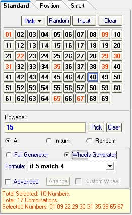

How to Use Ours Wheeling Systems |
SamLotto lottery software support use the wheeling systems to generate tickets, This wheeling system contains over 2200 wheels formulas, support almost all pick 2, pick 3, pick 4, pick 5, pick 6, pick 7 from 1 to 90 numbers, and select max 36 numbers to the wheel.
What is a Wheeling System?
In short, The wheeling system is a reduced form of the complete number combinations. It provides the most efficient coverage for the numbers you choose to play, and it gives you an assurance of winning for each wheel. You do not have to bet on all combinations of your chosen numbers.
The following information is from Wikipedia
Lottery wheeling (also known as a lottery system, lottery wheel, lottery wheeling system) is an entertaining strategy of playing the lotteries, widely used by individual players and syndicates to secure wins provided they hit some of the drawn numbers. It allows playing with more than one ticket and more numbers than those drawn in the lottery. For more information, please visit Wikipedia.
How to Use SamLotto’s Wheeling Systems?
For example, see the screenshot below, in the following Powerball lottery, choose 10 numbers to the wheel, we choose the formula “if 5 matches 4” instead of purchasing 252 combinations, you only bet on 17 tickets, and if the winning numbers are among those 10 numbers, it guarantees you win a 4-number prize and several 3-number and 4-number prizes. The odds of winning 5 numbers is 6.75%. If you’re really lucky, you hit the jackpot. (If you want to generate complete combinations, please use the Full Generator.).

Home
Page: http://www.samlotto.com
Support:support@samlotto.com
Copyright: © SamLotto Lottery Software Team All rights reserved.